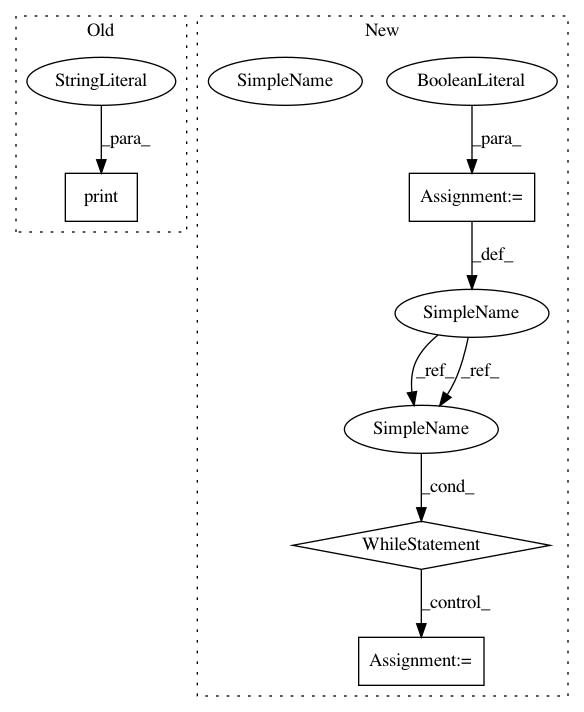

b596fa33d6b03bb858cf6599c1d37cb4a182af33,homeassistant/__main__.py,,main,#,207
Before Change
log_rotate_days=args.log_rotate_days)
else:
config_file = ensure_config_file(config_dir)
print("Config directory:", config_dir)
hass = bootstrap.from_config_file(
config_file, daemon=args.daemon, verbose=args.verbose,
skip_pip=args.skip_pip, log_rotate_days=args.log_rotate_days)
After Change
write_pid(args.pid_file)
// Run hass is child process. Restart if necessary.
keep_running = True
while keep_running:
hass_proc = Process(target=setup_and_run_hass, args=(config_dir, args))
keep_running = run_hass_process(hass_proc)
if __name__ == "__main__":
main()
In pattern: SUPERPATTERN
Frequency: 3
Non-data size: 4
Instances
Project Name: home-assistant/home-assistant
Commit Name: b596fa33d6b03bb858cf6599c1d37cb4a182af33
Time: 2016-01-26
Author: rmkraus@gmail.com
File Name: homeassistant/__main__.py
Class Name:
Method Name: main
Project Name: stanfordnmbl/osim-rl
Commit Name: 1c5ccb739d34119ae795011859c8537b77ca59eb
Time: 2019-05-12
Author: ssm0445@gmail.com
File Name: cmaes/optim_par_L2M2019Ctrl_2D.py
Class Name:
Method Name: f_ind
Project Name: stanfordnmbl/osim-rl
Commit Name: 1c5ccb739d34119ae795011859c8537b77ca59eb
Time: 2019-05-12
Author: ssm0445@gmail.com
File Name: cmaes/optim_par_L2M2019Ctrl.py
Class Name:
Method Name: f_ind
Project Name: home-assistant/home-assistant
Commit Name: b596fa33d6b03bb858cf6599c1d37cb4a182af33
Time: 2016-01-26
Author: rmkraus@gmail.com
File Name: homeassistant/__main__.py
Class Name:
Method Name: main